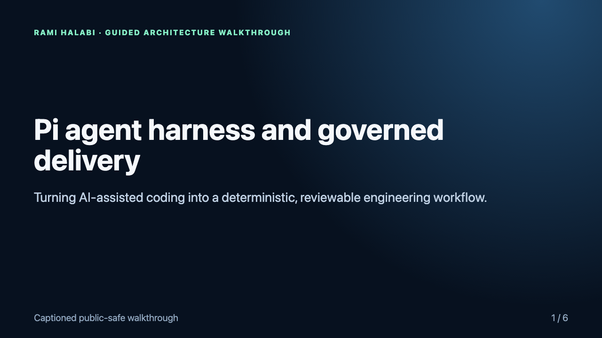
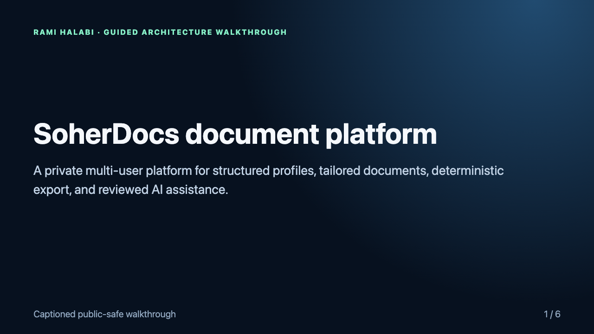

Pi agent harness
A governed delivery layer for coding agents: explicit authority, deterministic phases, cross-process coordination, bounded remediation, and fail-closed safety.
Runtime recording138/138 tests
Two private projects presented through plain-language case studies, actual runtime evidence, and technical appendices for deeper review.
Private source available for supervised review. Temporary read-only access can be arranged for an identified technical interviewer after scope confirmation.
Each page explains the business value first, then shows what actually ran and what remains private.

A governed delivery layer for coding agents: explicit authority, deterministic phases, cross-process coordination, bounded remediation, and fail-closed safety.

A multi-user document platform with authenticated ownership, private artifacts, deterministic export, and reviewed AI-assisted workflows.
Read the business problem and my contribution in under two minutes.
Watch the real product flow or inspect actual core behavior and test output.
Use the technical appendix or request a supervised source review.